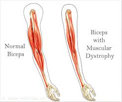

Muscular dystrophy (MD)

SYMPTOMS:
Muscle weakness is the primary symptom of muscular dystrophy. Depending on the type, the disease affects different muscles and parts of the body. Other signs of muscular dystrophy include:
- Enlarged calf muscles.
-
Difficulty walking or running.
-
Unusual walking gait (like waddling).
-
Trouble swallowing.
-
Heart problems, such as arrhythmia and heart failure (cardiomyopathy).
-
Learning disabilities.
-
Stiff or loose joints.
-
Muscle pain.
-
Curved spine (scoliosis).
-
Breathing problems.
CAUSES
Genetic mutations, or changes, cause most forms of muscular dystrophy. One or both parents may pass a faulty gene to their child even if the parent doesn’t have the condition. Rarely, a person develops muscular dystrophy spontaneously, meaning there’s no known cause.
DIAGNOSIS
If your healthcare provider suspects muscular dystrophy, you or your child may undergo one or more of these diagnostic tests:
- An enzyme and protein blood test checks for elevated levels of an enzyme called creatine kinase. High levels can indicate muscle damage caused by muscular dystrophy.
-
Electromyography (EMG) measures the electrical activity of muscles and nerves.
A muscle biopsy looks for cell changes in muscle tissue.
-
Genetic tests identify gene mutations linked to muscular dystrophy.
TREATMENT
Researchers are still looking for a way to cure muscular dystrophy. Disease symptoms get worse over time, but these treatments can help:
- Physical and occupational therapies strengthen and stretch muscles. These therapies can help you maintain function and range of motion.
-
Speech therapy helps those who have problems swallowing.
-
Corticosteroids, such as prednisone and deflazacort, may slow disease progression.
Surgery relieves tension on contracted muscles and corrects spine curvature (scoliosis).
-
Heart assist devices, such as pacemakers, treat heart rhythm problems and heart failure.
Medical devices, such as walkers and wheelchairs, can improve mobility and prevent falls.
-
Respiratory care, such as cough-assist devices and respirators, aid breathing.